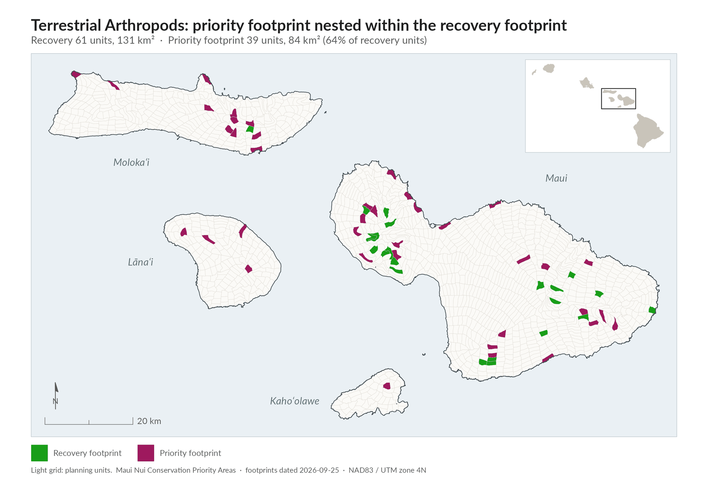
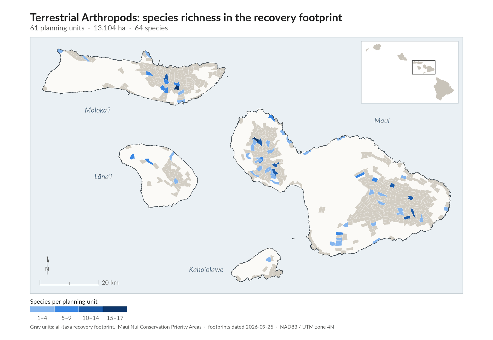
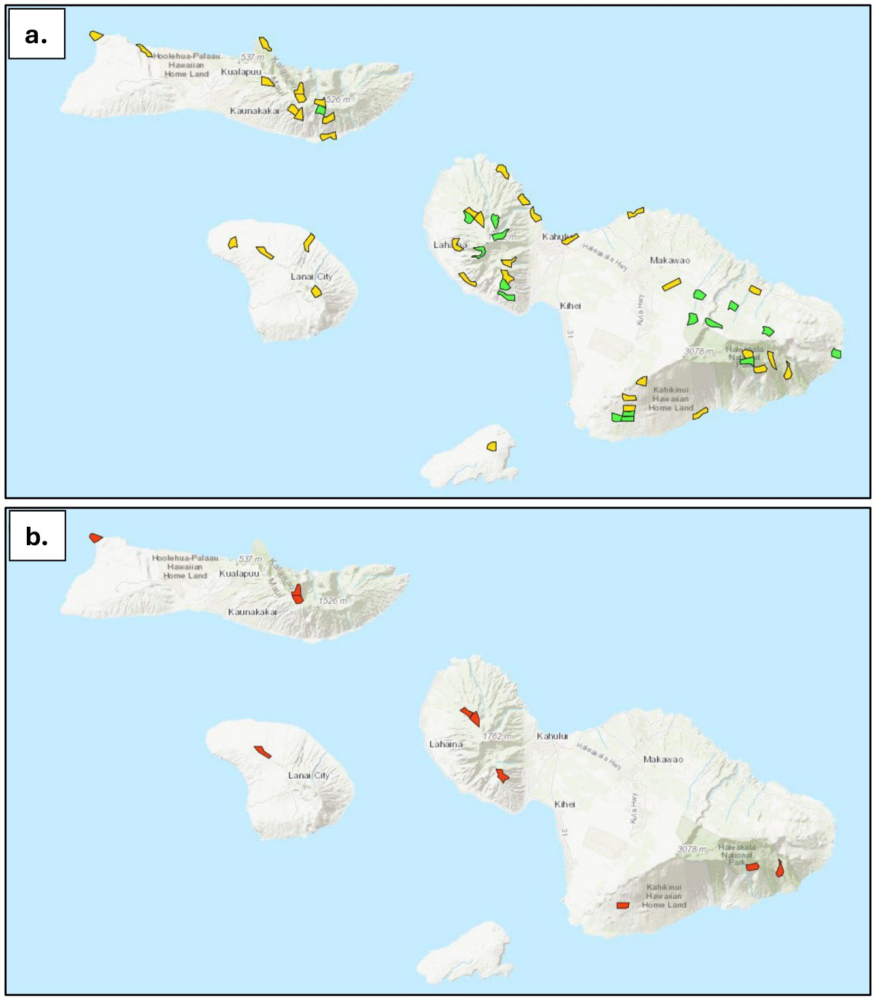
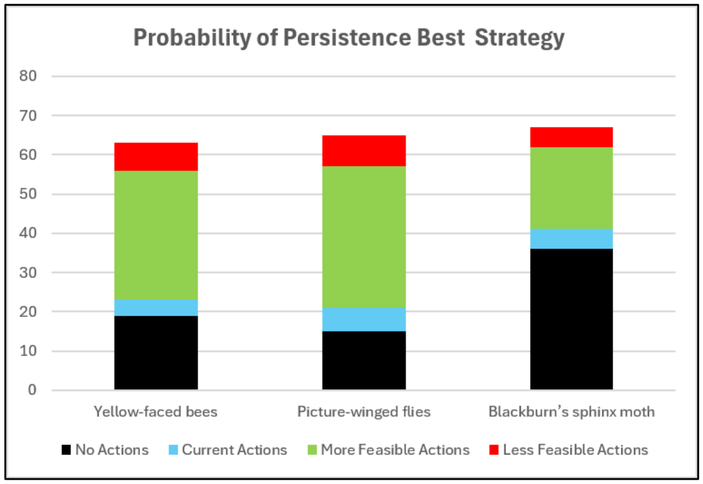
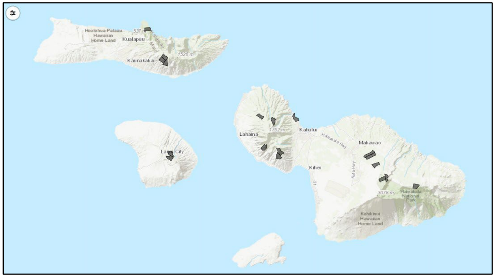

Why arthropods matter, and why they are hard to plan for
Terrestrial arthropods are the plan's second-largest group after plants. The group has thousands of species and very high levels of endemism, and it is generally poorly known. Many more species than the 172 may also be at risk of extinction.plan p.63, lines 2622-2625
Many at-risk arthropods lack enough distribution data (usually fewer than five occurrence records) or information on habitat needs to show where to focus management.plan p.18, lines 955-958 For these species, the plan sets up surveys and research to collect the data, and then adds them to the plan's footprints.plan p.18, lines 958-962
Of 172 at-risk arthropods, only 32 have enough data to map where recovery should happen. Surveys for the other 140 are a core part of the strategy, not an afterthought.plan p.64, lines 2695-2698
The species
The at-risk list spans many arthropod groups. The largest are picture-winged flies (Drosophila, 36 species) and yellow-faced bees (Hylaeus, 22). They are followed by Plagithmysus (18), Philodoria (11) and Nesosydne (8), along with more than 40 other genera. The group also includes hawk moths and leafhoppers.plan App 7 pp.A7-1 to A7-6, lines 7554-7774 (row tally); App 1 p.A1-7 lines 5233-5235
The eight endangered species are two picture-winged flies (Drosophila differens, D. neoclavisetae), five yellow-faced bees (Hylaeus anthracinus, H. assimulans, H. facilis, H. hilaris, H. longiceps) and Blackburn's sphinx moth (Manduca blackburni).plan App 7 ESA Listing column; App 3 common names
The 32 species with mappable recovery habitat include native Drosophila, Hylaeus and Manduca.plan p.65, lines 2705-2706
The 32 species with recovery habitat (Appendix 7)Details
"Occupied PUs" is the number of planning units (PUs, areas of about 2 km² each) with a known population. "Target" is the number of recovery habitat areas sought in the footprint. E = federally endangered. IE = facing imminent extinction.plan App 7 pp.A7-1 to A7-4
Terrestrial arthropods with interim or full recovery goals (plan Appendix 7)
| Species | Occupied PUs | Status | Goal | Target |
|---|---|---|---|---|
| Drosophila affinidisjuncta | 8 | Interim | 5 | |
| Drosophila balioptera | 13 | Interim | 5 | |
| Drosophila bostrycha | 8 | Interim | 5 | |
| Drosophila cilifera | 11 | Interim | 5 | |
| Drosophila clavisetae | 6 | Interim | 3 | |
| Drosophila disjuncta | 13 | Interim | 5 | |
| Drosophila grimshawi | 39 | Interim | 5 | |
| Drosophila lanaiensis | 13 | Interim | 5 | |
| Drosophila limitata | 21 | Interim | 5 | |
| Drosophila liophallus | 6 | Interim | 5 | |
| Drosophila odontophallus | 11 | Interim | 5 | |
| Drosophila orphnopeza | 18 | Interim | 5 | |
| Drosophila orthofascia | 14 | Interim | 5 | |
| Drosophila peniculipedis | 6 | Interim | 5 | |
| Drosophila pihulu | 4 | Interim | 5 | |
| Drosophila planitibia | 8 | Interim | 5 | |
| Drosophila sodomae | 6 | Interim | 5 | |
| Drosophila spectabilis | 10 | Interim | 5 | |
| Drosophila truncipenna | 4 | Interim | 5 | |
| Drosophila vesciseta | 5 | Interim | 5 | |
| Hylaeus angustulus | 3 | Interim | 5 | |
| Hylaeus anthracinus | 15 | E, IE | Interim | 5 |
| Hylaeus assimulans | 17 | E | Interim | 5 |
| Hylaeus coniceps | 6 | Interim | 5 | |
| Hylaeus connectens | 6 | Interim | 5 | |
| Hylaeus flavipes | 4 | IE | Interim | 5 |
| Hylaeus fuscipennis | 10 | Interim | 5 | |
| Hylaeus haleakalae | 6 | Interim | 5 | |
| Hylaeus laetus | 7 | IE | Interim | 5 |
| Hylaeus longiceps | 7 | E, IE | Interim | 5 |
| Hylaeus unicus | 10 | Interim | 5 | |
| Manduca blackburni (Blackburn's sphinx moth) | 15 | E | Full | 6 |
The other 140 species are listed in Appendix 7 with their survey type.plan App 7
Status and trends
The 172 species vary widely in how much is known about them.plan p.64, lines 2694-2695 Many lack modern occurrence records. Some can only be placed by where their host plants grow or where conditions are broadly suitable, which gives wide and uncertain ranges.plan App 1 p.A1-8, lines 5237-5241 Because the data are so limited, the plan does not give trends for the group as a whole.
Threats
- Habitat loss and ecosystem degradation.plan p.63, lines 2620-2621
- Non-native wasps and ants, through predation and competition.plan p.63, lines 2621-2622; Exec Summary Table 1 p.vi
- Host-plant decline. Insects that depend on one host plant species are at risk if that plant declines or goes extinct.plan p.63, lines 2622-2624
- Ungulates, weeds and rats in recovery habitat; in some areas, rodents (mice) damage host plants.plan p.63, lines 2640-2641; p.68 lines 2817-2818
Recovery strategy
Goals
The plan's initial target is five healthy, self-sustaining populations for each arthropod species.plan p.64, lines 2693-2694 Thirty-two species had enough occurrence and habitat information to map recovery habitat. The other 140 did not.plan p.64, lines 2695-2698 The recovery footprint covers the interim recovery habitat needs of 31 species and the full recovery needs of one, Blackburn's sphinx moth.plan p.65, lines 2701-2703
Emergency actions for nine yellow-faced bees
Nine yellow-faced bee species (Hylaeus) face imminent extinction within five years. Four of them are listed under federal and state law. A fifth listed species, Hylaeus assimulans, is not at imminent risk.plan p.64, lines 2667-2670 The main actions to prevent these extinctions are habitat protection (fencing) and restoring native vegetation. Existing fences should be maintained.plan p.64, lines 2670-2672 Every one of the nine should have at least one extant or recently occupied site targeted for emergency action, such as ant control, fire protection or outplanting host plants.plan p.63, lines 2629-2633
Yellow-faced bees facing imminent extinction in the next five years (plan Table 19). E = endangered under federal and state law. <!-- src: plan p.64, Table 19, lines 2674-2689 -->
| Species | Known populations | ESA | Emergency actions |
|---|---|---|---|
| Hylaeus anthracinus | 5 | E | Habitat restoration and fencing at known sites |
| Hylaeus facilis | 1 | E | Habitat restoration and fencing at known sites |
| Hylaeus flavipes | 2 | Fencing at Olowalu and Kahue; habitat restoration at known sites | |
| Hylaeus hilaris | 1 | E | Fencing at Ilio Point; habitat restoration at known sites |
| Hylaeus laetus | 1 | Habitat restoration and fencing at known sites | |
| Hylaeus longiceps | 3 | E | Fencing at Ilio Point; habitat restoration at known sites |
| Hylaeus paumako | 1 | Habitat restoration and fencing at known sites | |
| Hylaeus psammobius | 2 | Fencing at Papanalahoa; habitat restoration at known sites | |
| Hylaeus volatilis | 1 | Habitat restoration and fencing at known sites |
The plan also calls for a detailed review of listed species and well-documented taxa to find any other species facing imminent extinction.plan p.63, lines 2635-2636
Recovery footprint and priority footprint
The recovery footprint shows where to restore and manage habitat for the 32 species with enough data. Management there means removing ungulates and controlling key invasive weeds, rats and invertebrate pests.plan p.63, lines 2637-2641 The plan also identifies a priority footprint: areas with populations of the nine species facing imminent extinction.plan p.65, lines 2713-2715
Terrestrial arthropods followed the plan's algorithmic pathway. The recovery footprint was built with the plan's comprehensive planning process, TFE-SCP (Transparent, Flexible, Expert-engaged Systematic Conservation Planning), and its OptimTFE prioritization algorithm, then reviewed by experts. The process weighed habitat quality, known arthropod occurrences and overlap with the plant recovery footprint. Where feasible, it sought at least five recovery habitat areas for every species with enough occurrence information.plan p.65, lines 2703-2712 The arthropod footprint overlaps substantially with the plant footprint, so many arthropod sites will benefit from habitat protection and restoration already planned for plant recovery.plan App 1 p.A1-8, lines 5267-5269
The plan does not state the number of planning units in the arthropod recovery or priority footprints.plan Ch 6 f and App 1 (no figure given); see notes/groups2.md


Map as printed in the plan (Figure 12)Details

How the arthropod footprint was prioritized (practitioner detail)Details
- Two tiers of evidence. Many species lack modern occurrence records, so two tiers of distribution information were used. Occurrence-driven taxa have modern records good enough for place-based expert review. Host-plant and climate-envelope taxa rely on where their host plants occur or where conditions are broadly suitable.plan App 1 p.A1-8, lines 5236-5241
- Targets. Candidate footprints aimed for five locations per species as an interim recovery target, because most species lacked the information to plan for full recovery. Targets were placed where feasible and spread across each species' historic range.plan App 1 p.A1-8, lines 5242-5246
- Criteria. The arthropod team emphasized habitat quality, known rare arthropod occurrences and alignment with the plant conservation footprint.plan App 1 p.A1-8, lines 5246-5248
- Two products. (1) A conservation footprint for taxa with enough modern occurrence evidence for place-based interim recovery planning. (2) Focal Area Survey areas, which show where host-plant associations, habitat quality, accessibility and other criteria suggest surveys should focus.plan App 1 p.A1-8, lines 5250-5257
- Survey categories. A species went to Focal Area Surveys when it lacked enough targets to meet its interim recovery goal but had usable spatial information (host plants, a climate envelope or occurrence points). Species with no usable spatial information went to Basic Species-specific Surveys.plan App 1 p.A1-8, lines 5257-5260
- Using it. For occurrence-backed species, the Adaptive Conservation Planner shows planning units with target species and expert-reviewed reasons for each. For data-deficient species, Focal Area Survey layers show where more surveys could find species in areas suitable or convenient for conservation.plan App 1 p.A1-8, lines 5262-5267
- Limitation. Some species may have no targets until surveys provide defensible recovery locations.plan App 1 p.A1-8, lines 5270-5271
Priority conservation actions
The plan's action prioritization (a modified Priority Threat Management, or PTM, analysis, led by UH Mānoa) assessed three arthropod subgroups: yellow-faced bees (Hylaeus), picture-winged flies (Drosophila) and Blackburn's sphinx moth (Manduca).plan p.67, lines 2745-2749; Exec Summary p.v line 151 (The PTM also assessed Megalagrion damselflies, which the plan groups with Aquatic invertebrates.)
With the extensive plant- and invertebrate-focused management in Strategy S25, arthropods as a group may reach a 65 percent chance of persistence. When adjusted for feasibility, this drops to 58 percent.plan pp.66-67, lines 2736-2742 All three subgroups reach between the mid-50s and mid-60s, depending on how feasible the actions prove.plan p.67, lines 2755-2757
What the three subgroups share:plan p.68, lines 2772-2784 - Each one's best single action is S13, future tools for rare plants and invertebrates, which includes invertebrate propagation facilities. - All three have three other actions in their top five: S12 (current tools for rare plants and invertebrates), S8 (control of invasive ants and yellow jackets) and S5 (terrestrial habitat management for sensitive species). - Each subgroup has one top-five action of its own: S3 (future ungulate fencing) for Hylaeus, S10 (future predator-proof fences) for Drosophila, and S16 (minimizing and modifying infrastructure) for Manduca.
For yellow-faced bees, species experts recommend starting with ungulate fencing. Next come invasive ant control, existing tools for rare plants and invertebrates, terrestrial habitat management, and then future tools.plan p.68, lines 2813-2818

Benefits of single strategies for the three arthropod subgroups (plan Table 20)Details
Persistence is the estimated percent chance of persisting if that one strategy is implemented. S1 is no action. "Seq." is the preferred order for putting each subgroup's five most beneficial strategies into practice. The column headings give overall persistence: 63 percent for yellow-faced bees, 65 percent for picture-winged flies and 67 percent for Blackburn's sphinx moth.plan p.68, Table 20, lines 2785-2811
Benefits of single strategies for yellow-faced bees, picture-winged flies and Blackburn's sphinx moth (plan Table 20)
| Strategy | Description | Bees % | Bees seq. | Flies % | Flies seq. | Moth % | Moth seq. |
|---|---|---|---|---|---|---|---|
| S1 | No action | 19 | 15 | 36 | |||
| S2 | Current ungulate fences | 25 | 21 | 41 | |||
| S3 | Future ungulate fences | 27 | 1 | 26 | 41 | ||
| S4 | Fenceless ungulate control | 23 | 22 | 39 | |||
| S5 | Habitat management | 34 | 4 | 33 | 2 | 47 | 2 |
| S6 | Wetland management | 24 | 20 | 39 | |||
| S7 | Vertebrate predator control | 25 | 27 | 40 | |||
| S8 | Invertebrate predator control | 40 | 2 | 34 | 4 | 46 | 4 |
| S9 | Current predator fences | 21 | 18 | 39 | |||
| S10 | Future predator fences | 22 | 31 | 5 | 39 | ||
| S11 | Landscape rat control | 20 | 23 | 39 | |||
| S12 | Current plant/invertebrate tools | 36 | 3 | 44 | 3 | 42 | 5 |
| S13 | Future plant/invertebrate tools | 41 | 5 | 44 | 1 | 51 | 1 |
| S14 | Current avian disease | 19 | 15 | 38 | |||
| S15 | Future avian disease | 19 | 15 | 38 | |||
| S16 | Infrastructure minimized | 19 | 15 | 43 | 3 | ||
| S17 | Vertebrate rehabilitation | 19 | 15 | 39 |
Combination strategies (Table 26, feasibility-adjusted): under S25, yellow-faced bees reach 56 percent, picture-winged flies 57 percent and Blackburn's sphinx moth 62 percent. Blackburn's sphinx moth is the only PTM group predicted to exceed 60 percent after feasibility is accounted for.plan p.85 Table 26; App 2 p.A2-9 lines 5550-5553 and Table 1 p.A2-15
What S13 and S8 include. S13 includes building and maintaining one captive invertebrate propagation facility on Maui, cryopreservation methods for rare invertebrates, and research on controlling invasive pests.plan App 2 p.A2-34, lines 6395-6413 S8 covers surveys of sensitive species habitat to detect and remove or control little fire ants, bighead ants, Argentine ants and western yellowjackets.plan App 2 pp.A2-31 to A2-32, lines 6286-6304 S12 includes artificial habitat for insects (such as bee blocks) and reintroducing arthropods in dry forest and coastal habitats up to 2,000 ft.plan App 2 p.A2-34, lines 6391-6394
Survey before you clear. Experts stressed surveying for rare plants and invertebrates before clearing areas for fences or removing invasive vegetation. Any species found may need to be relocated first.plan App 2 p.A2-17, lines 5728-5732
Surveys and data gaps
For the 140 species without enough data, the plan's spatial prioritization team (led by USGS) and the Terrestrial Arthropod Team used TFE-SCP and OptimTFE to map priority areas for at-risk arthropod surveys.plan p.69, lines 2823-2828; Exec Summary p.v line 150 The teams used host-plant associations, habitat quality, accessibility and other criteria to suggest where multi-species surveys should be considered.plan p.69, lines 2828-2830
The survey map is not a recovery footprint. It shows where field surveys are most likely to find new populations, and so produce the data needed for long-term management plans.plan p.69, lines 2830-2832
The plan uses two kinds of surveys:plan pp.18-19, lines 963-978 - Area surveys (Focal Area Surveys), 82 species. These are for species that lack distribution or habitat information but have known host plant associations that can be mapped. Area surveys target planning units that may hold many species needing surveys, an approach the plan expects to be both effective and efficient. They show where to look for species, not where to manage.plan p.18, lines 963-972; Ch 4 Table 1 line 996 - Species-specific surveys (Basic Species-specific Surveys), 58 species. These are for species that lack the information needed for either recovery habitat or area surveys. The plan does not map areas for these surveys.plan p.19, lines 975-978; Ch 4 Table 1 line 996
Some species facing imminent extinction are themselves in the survey categories.plan p.16, lines 891-893 When surveys fill these gaps, the recovery footprint will be updated to include habitat for those species.plan p.63, lines 2645-2647

Monitoring and research needs
- Propagation facilities for invertebrates.plan p.63, line 2642
- Review of listed and well-documented species to find other species facing imminent extinction.plan p.63, lines 2635-2636
- New control tools for ants and wasps, under S13.plan p.86, lines 3463-3472
- More invertebrate expertise. Experts made fewer predictions for plants and invertebrates than for vertebrates. This reflects a need for more plant and invertebrate expertise in the state, especially within DLNR, and gaps in knowledge about the distribution and abundance of native invertebrates.plan App 2 p.A2-17, lines 5734-5740